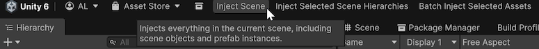
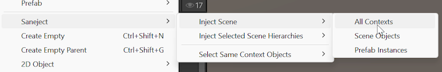
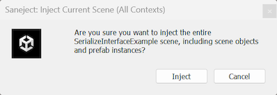

Injection toolbar & context menus
Saneject injection context menusInjection context menuEditor command under Saneject/Inject Scene/..., Saneject/Inject Selected Scene Hierarchies/..., Saneject/Inject Prefab Asset/..., or the matching GameObject/Saneject/... paths that start an injection run with a selected target and ContextWalkFilter. are editor commands that run dependency injection on scenes, prefab assetsPrefab assetReusable prefab definition in the Project window., or batches of assets.
For common full-run workflows, Saneject also exposes contextual main toolbar buttons:
Inject SceneInject Selected Scene HierarchiesInject Prefab AssetBatch Inject Selected Assets
Those toolbar buttons appear only when they apply to the current selection or editor stage, and they always run with ContextWalkFilter.AllContexts.
If you are new to contextsContextSerialization boundary Saneject uses during injection to decide scope traversal and candidate eligibility. and filters, read Context first.
Toolbar buttons
The contextual main toolbar buttons cover the most common AllContexts runs.

Inject Scene: shown while editing a scene.Inject Selected Scene Hierarchies: shown while editing a scene and one or more scene objects are selected.Inject Prefab Asset: shown in Prefab Mode.Batch Inject Selected Assets: shown when the Project selection contains one or more scene assets, prefab assetsPrefab assetReusable prefab definition in the Project window., or folders that contain them.
For more focused runs, use the injection context menusInjection context menuEditor command under Saneject/Inject Scene/..., Saneject/Inject Selected Scene Hierarchies/..., Saneject/Inject Prefab Asset/..., or the matching GameObject/Saneject/... paths that start an injection run with a selected target and ContextWalkFilter. described below.
Context menus
Saneject exposes the same grouped injection commands in multiple Unity menus.

- Main menu:
Saneject/Inject Scene/...Saneject/Inject Selected Scene Hierarchies/...Saneject/Inject Prefab Asset/...
- Hierarchy context menu:
GameObject/Saneject/Inject Scene/...GameObject/Saneject/Inject Selected Scene Hierarchies/...GameObject/Saneject/Inject Prefab Asset/...
- Project window context menu:
Assets/Saneject/Batch Inject Selected Assets/All ContextsAssets/Saneject/Batch Inject Selected Assets/Scene ObjectsAssets/Saneject/Batch Inject Selected Assets/Prefab Asset ObjectsAssets/Saneject/Batch Inject Selected Assets/Prefab Instances
- Main menu batch shortcuts:
Saneject/Batch Inject Selected Assets/All ContextsSaneject/Batch Inject Selected Assets/Scene ObjectsSaneject/Batch Inject Selected Assets/Prefab Asset ObjectsSaneject/Batch Inject Selected Assets/Prefab Instances
There is also a dedicated batch injectorBatch InjectorEditor window for preparing and running batch injection with per-asset enable state, status, and ContextWalkFilter. window:
Saneject/Open Batch Injector Window
That window is covered in Batch injection.
Scene and prefab injection commands
All commands in Saneject/Inject Scene/..., Saneject/Inject Selected Scene Hierarchies/..., Saneject/Inject Prefab Asset/..., and the matching GameObject/Saneject/... paths use the same injection pipelineInjection pipelineOrdered stages Saneject runs during injection, from graph build and context filtering through validation, resolution, assignment, and summary logging.. The only differences are:
- Start objects for the run.
ContextWalkFilterselected by that menu item.
Inject Scene group
Menu paths:
Saneject/Inject Scene/All ContextsSaneject/Inject Scene/Scene ObjectsSaneject/Inject Scene/Prefab InstancesGameObject/Saneject/Inject Scene/...
Availability:
- Enabled only while editing a scene.
- Disabled in Prefab Mode.
Behavior:
- Uses the active scene's root
GameObjectobjects as start objects. - Runs injection for that scene using the selected filter.
Inject Selected Scene Hierarchies group
Menu paths:
Saneject/Inject Selected Scene Hierarchies/All ContextsSaneject/Inject Selected Scene Hierarchies/Scene ObjectsSaneject/Inject Selected Scene Hierarchies/Prefab InstancesSaneject/Inject Selected Scene Hierarchies/Same Contexts As SelectionGameObject/Saneject/Inject Selected Scene Hierarchies/...
Availability:
- Enabled only while editing a scene.
- Requires at least one selected
GameObject.
Behavior:
- Uses
Selection.gameObjectsas start objects. - The graph is built from each selected object's root transform, then filtered by the selected
ContextWalkFilter. - This means a selected child can still cause its full root hierarchy to be part of the run.
Inject Prefab Asset group
Menu paths:
Saneject/Inject Prefab Asset/All ContextsSaneject/Inject Prefab Asset/Prefab Asset ObjectsSaneject/Inject Prefab Asset/Prefab InstancesSaneject/Inject Prefab Asset/Same Contexts As SelectionGameObject/Saneject/Inject Prefab Asset/...
Availability:
- Enabled only in Prefab Mode.
Same Contexts As Selectionalso requires a selection.
Behavior:
- For
All Contexts,Prefab Asset Objects, andPrefab Instances, Saneject starts from the current prefab assetPrefab assetReusable prefab definition in the Project window. root. - For
Same Contexts As Selection, Saneject starts from the current selection.
Filter labels used in menu names
Menu labels in these command groups, including Batch Inject Selected Assets/..., map directly to ContextWalkFilter values:
| Menu label suffix | Context walk filter | Included contexts |
|---|---|---|
All Contexts |
AllContexts |
Scene objectsScene objectNon-prefab GameObject in a scene., prefab instancesPrefab instanceInstantiated prefab placed in a scene or nested inside another prefab., prefab assetPrefab assetReusable prefab definition in the Project window. objects |
Scene Objects |
SceneObjects |
Scene objectScene objectNon-prefab GameObject in a scene. contextsContextSerialization boundary Saneject uses during injection to decide scope traversal and candidate eligibility. only |
Prefab Instances |
PrefabInstances |
Prefab instancePrefab instanceInstantiated prefab placed in a scene or nested inside another prefab. contextsContextSerialization boundary Saneject uses during injection to decide scope traversal and candidate eligibility. only |
Prefab Asset Objects |
PrefabAssetObjects |
Prefab assetPrefab assetReusable prefab definition in the Project window. contextsContextSerialization boundary Saneject uses during injection to decide scope traversal and candidate eligibility. only |
Same Contexts As Selection |
SameContextsAsSelection |
ContextsContextSerialization boundary Saneject uses during injection to decide scope traversal and candidate eligibility. matching selected start object contexts only |
ContextWalkFilter controls what enters the run. It does not override context isolationContext isolationProject setting (UseContextIsolation) that controls whether dependency resolution can cross context boundaries..
Context isolationContext isolationProject setting (UseContextIsolation) that controls whether dependency resolution can cross context boundaries. is configured in project settingsProject settingsSaneject settings shared at project scope, stored in ProjectSettings/Saneject/ProjectSettings.json and available from Saneject/Settings -> Project Settings. and still applies during resolution.
See Context.
Batch inject from selected assets
Entry points:
- Main toolbar:
Batch Inject Selected Assets(ContextWalkFilter.AllContexts) Assets/Saneject/Batch Inject Selected Assets/All ContextsAssets/Saneject/Batch Inject Selected Assets/Scene ObjectsAssets/Saneject/Batch Inject Selected Assets/Prefab Asset ObjectsAssets/Saneject/Batch Inject Selected Assets/Prefab InstancesSaneject/Batch Inject Selected Assets/All ContextsSaneject/Batch Inject Selected Assets/Scene ObjectsSaneject/Batch Inject Selected Assets/Prefab Asset ObjectsSaneject/Batch Inject Selected Assets/Prefab Instances


Availability:
- Enabled only when the current Project selection includes at least one scene asset or prefab assetPrefab assetReusable prefab definition in the Project window..
- Folder selection works because Saneject scans deep selected assets.
Behavior:
- Collect selected scene and prefab assetsPrefab assetReusable prefab definition in the Project window..
- Apply the
ContextWalkFilterchosen by the toolbar button or menu item to each collected asset. - Show batch confirmation dialog with scene and prefab counts.
- Ask to save currently modified open scenes before running.
- Inject each selected scene and prefab assetPrefab assetReusable prefab definition in the Project window..
- Save scene and asset changes.
- Log per-asset sections and final batch summary.
If an injected asset has no Scope components, the run logs that nothing was injected for that asset or run.
The toolbar button stays on AllContexts; the menu variants give you focused batch runs for SceneObjects, PrefabAssetObjects, or PrefabInstances.
The chosen filter is forwarded as-is to every collected asset, so mixed scene/prefab selections only process matching contextsContextSerialization boundary Saneject uses during injection to decide scope traversal and candidate eligibility. inside each asset.
Confirmation dialogs
By default, injection context menuInjection context menuEditor command under Saneject/Inject Scene/..., Saneject/Inject Selected Scene Hierarchies/..., Saneject/Inject Prefab Asset/..., or the matching GameObject/Saneject/... paths that start an injection run with a selected target and ContextWalkFilter. commands and contextual toolbar buttons show a confirmation dialog before running injection.

You can toggle these prompts in:
Saneject/Settings/User Settings/Ask Before Injection
Relevant toggles:
ScenePrefab AssetSelected Scene HierarchiesBatch Injection
Example: running a focused scene injection
Run steps:
- Select one or more scene objectsScene objectNon-prefab
GameObjectin a scene. in the hierarchy. - Run
Saneject/Inject Selected Scene Hierarchies/Scene Objects. - Check the Console for Saneject summary logs and any missing bindingBindingInstruction declared in a
Scopethat tells Saneject what to resolve, how to inject it, and where to search. or dependency errors.
This workflow is useful when you want to validate scene-object wiring without also processing prefab instancesPrefab instanceInstantiated prefab placed in a scene or nested inside another prefab. in the same run.